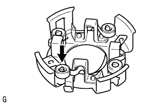
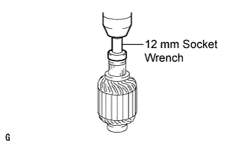
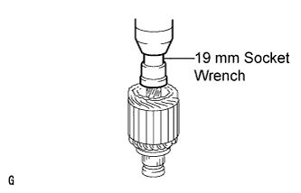
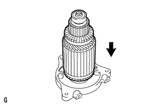
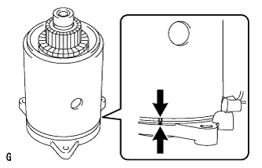
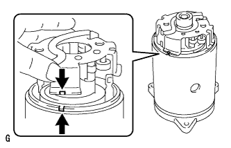
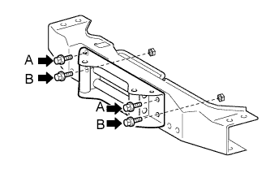
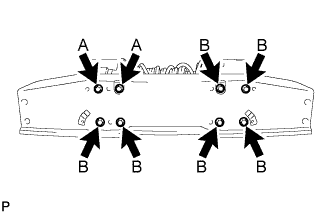

WINCH UNIT > REASSEMBLY |
| 1. INSTALL WINCH MOTOR BRUSH SPRING |
 |
Install the brush spring as shown in the illustration.
| 2. INSTALL NO. 1 WINCH MOTOR ARMATURE BEARING |
 |
Using a 12 mm socket wrench and press, press in a new bearing.
| 3. INSTALL NO. 2 WINCH MOTOR ARMATURE BEARING |
 |
Using a 19 mm socket wrench and press, press in a new bearing.
| 4. INSTALL WINCH MOTOR ARMATURE SUB-ASSEMBLY |
 |
Apply high temperature grease to the inside of the end frame bushing.
Install the armature to the end frame.
| 5. INSTALL WINCH MOTOR YOKE SUB-ASSEMBLY |
 |
Align the alignment marks and install the yoke to the end frame.
| 6. INSTALL WINCH MOTOR BRUSH HOLDER ASSEMBLY |
 |
Align the alignment marks and install the brush holder to the yoke.
| 7. INSTALL WINCH MOTOR BRUSH |
 |
Install the brush with the bolt.
 |
Using a screwdriver, pry the brush spring forward and insert the brush into the holder as shown in the illustration, then remove the screwdriver from the spring.
| 8. INSTALL WINCH MOTOR O-RING |
Install a new O-ring to the yoke.
| 9. INSTALL WINCH MOTOR COMMUTATOR END FRAME |
 |
Install the end frame with the 2 bolts.
| 10. INSTALL WINCH MOTOR MAGNET SWITCH ASSEMBLY |
 |
Install the switch to the motor with the 4 bolts.
 |
Install the wire harness with the 2 washers, 2 spring washers and 2 nuts.
Connect the connector.
| 11. INSTALL MAGNET SWITCH WINCH COVER |
 |
Install the cover with the 4 screws.
| 12. INSTALL WINCH ROLLER BRACKET ASSEMBLY |
 |
Install the roller bracket with the 4 bolts and 2 nuts.
| 13. INSTALL NO. 2 WINCH EARTH WIRE |
 |
Install the winch earth wire with the bolt.
| 14. INSTALL WINCH MOTOR ASSEMBLY |
 |
Install the winch motor with the 3 bolts.
 |
Install the winch base with the 8 bolts.
 |
Install the member with the 4 bolts.